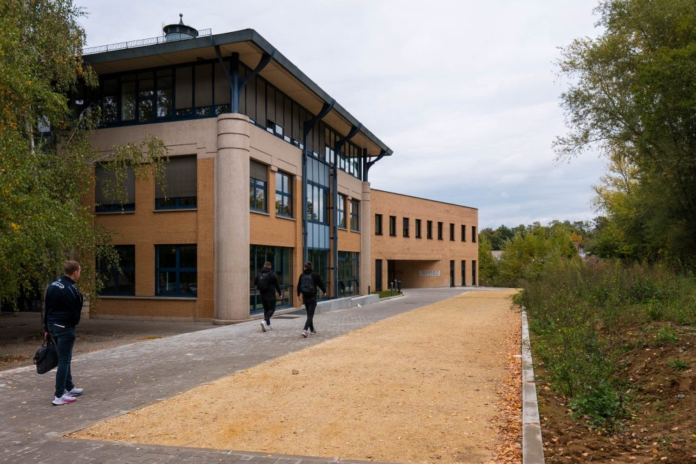

A propos de moi
Mon orientation professionnelle se porte vers les réseaux et la cybersécurité, bien que je n'aie pas encore défini précisément ma spécialisation, étant donné l'incertitude quant à l'évolution de mes études futures.
Initialement intéressé par l'infographie, j'ai été introduit à l'informatique par un ami. Ce changement de cap de dernière minute s'est révélé être une décision très positive, car j'ai rapidement compris que cela correspondait davantage à mes aspirations.
Actuellement en fin de cursus de mon bachelier à l'EPHEC de Louvain-la-Neuve, j'ai acquis une connaissance approfondie dans divers domaines de l'informatique.
Initialement intéressé par l'infographie, j'ai été introduit à l'informatique par un ami. Ce changement de cap de dernière minute s'est révélé être une décision très positive, car j'ai rapidement compris que cela correspondait davantage à mes aspirations.
Actuellement en fin de cursus de mon bachelier à l'EPHEC de Louvain-la-Neuve, j'ai acquis une connaissance approfondie dans divers domaines de l'informatique.

Points forts et points faibles
Dans mon projet futur, je considère ma persévérance comme l'un de mes atouts principaux.
Je suis déterminé à analyser les problèmes avec précision et à y trouver des solutions efficaces.
Ma passion pour le domaine me motive à aller au-delà des attentes et à rester à l'écoute des besoins et des défis rencontrés.
Cependant, ma vitesse de travail peut varier en fonction du projet, parfois influencée par mes compétences par rapport aux tâches à accomplir.
Malgré cela, mon engagement et ma détermination restent constants dans la poursuite de mes objectifs.
Je suis déterminé à analyser les problèmes avec précision et à y trouver des solutions efficaces.
Ma passion pour le domaine me motive à aller au-delà des attentes et à rester à l'écoute des besoins et des défis rencontrés.
Cependant, ma vitesse de travail peut varier en fonction du projet, parfois influencée par mes compétences par rapport aux tâches à accomplir.
Malgré cela, mon engagement et ma détermination restent constants dans la poursuite de mes objectifs.

Le stage
Mon stage en entreprise m'a permis de prendre du recul et d'acquérir une précieuse expérience professionnelle.
Travailler en équipe m'a également offert une nouvelle perspective sur le fonctionnement global des entreprises.
Travailler en équipe m'a également offert une nouvelle perspective sur le fonctionnement global des entreprises.